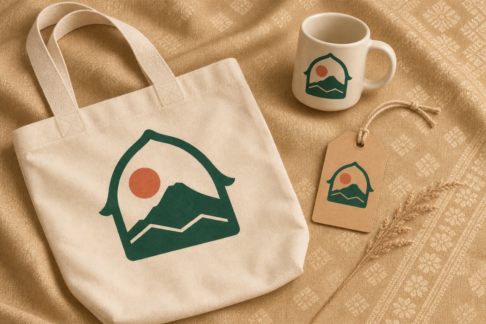
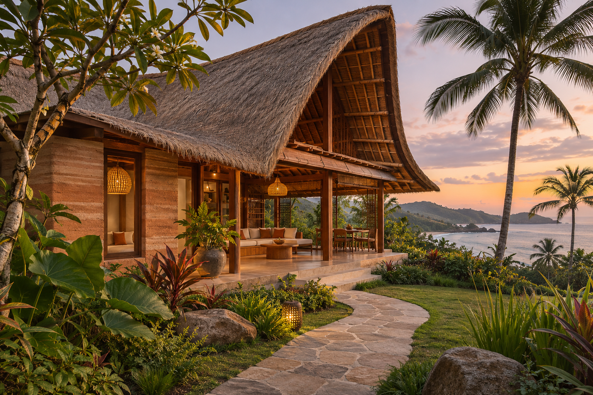
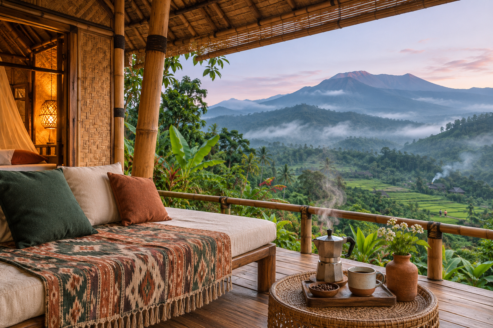
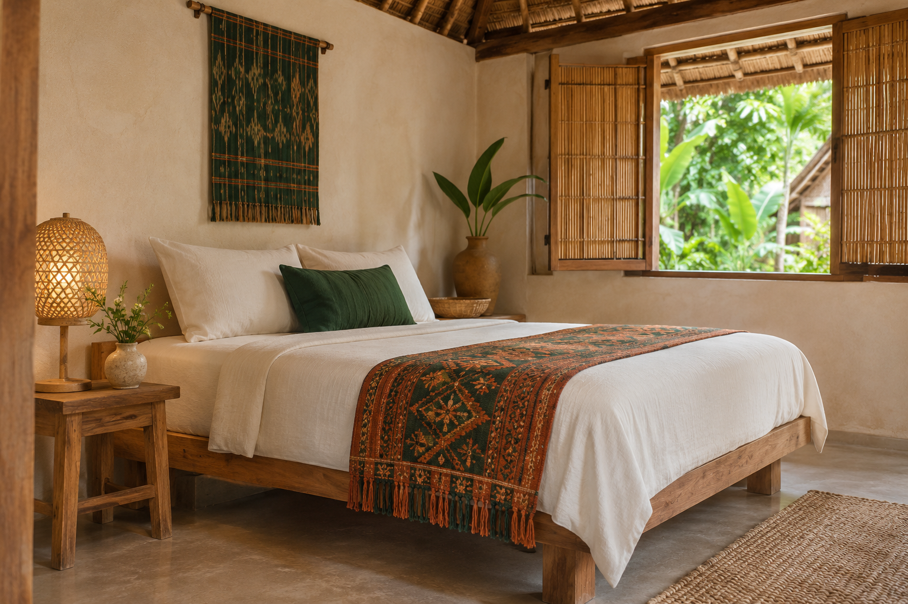
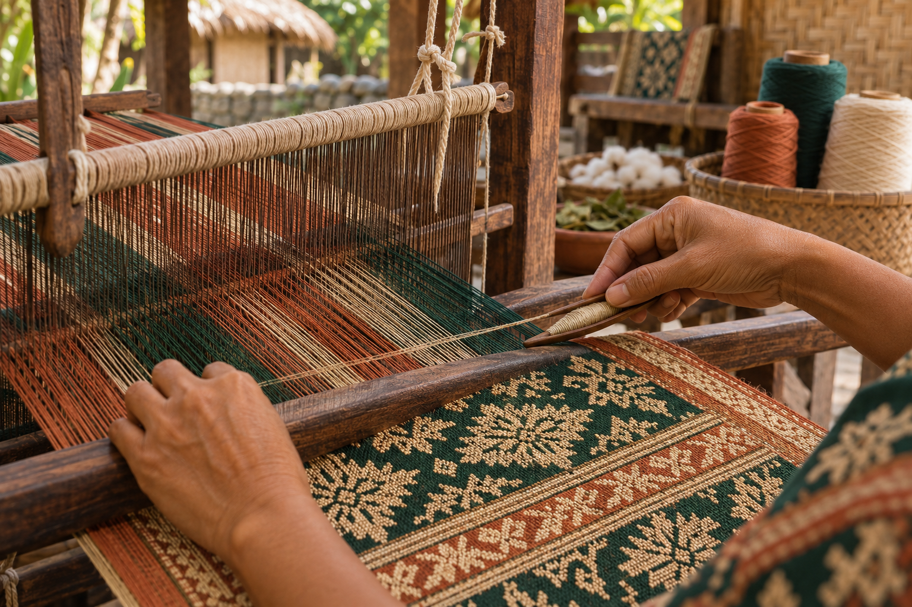

Jelajah Lombok
Menjelajahi Lombok dari mata warga lokal — penginapan dan pengalaman terkurasi. — Panduan lengkap identitas merek, sistem logo, palet warna WCAG 2.1 AA, tipografi DM Serif Display + Manrope, anatomi mesin pencari, dan komponen etalase Ortasys S4.

Posisi Merek & Temuan Riset Desain (Local & Destination)
Arsitektur visual memprioritaskan kejelasan destinasi dan pencapaian cepat ke mesin pencari di layar pertama.
Pemisahan tegas antara tipografi ekspresif pada tajuk dan tipografi fungsional berangka tabular pada harga & tanggal.
Seluruh token warna diuji terhadap standar kontras WCAG 2.1 AA (minimal 4,5:1 untuk teks dan 3:1 untuk batas komponen UI).
Transparansi harga ritel penuh dalam IDR dengan janji pengecekan harga langsung (live price check).
Master Mark, Varian Latar, Clear Space & Aplikasi Merek
Digunakan pada permukaan terang (#F4EDE1, #FFFCF6) dengan ruang bebas minimal 0,25× tinggi simbol.
Digunakan pada permukaan gelap (#174C43, #103B34) dan bagian footer malam.
Penerapan konsisten pada papan nama, kartu tamu, dan perlengkapan perjalanan.
Token Warna Inti & Derivasi Aksesibilitas
Primary
Primary action, active navigation, key brand anchor
Primary Hover
Hover & pressed state for primary controls
Secondary
Secondary highlights, badges & supporting accents
Tertiary
Warm supporting surfaces & editorial dividers
Accent
Focused emphasis markers & category tags
Background Canvas
Main page canvas & broad section background
Surface
Cards, search console, popovers & modals
Surface Muted
Secondary container contrast & table headers
Text Primary
Headings, body copy & primary data values
Text Muted (Raw)
Metadata, captions & helper descriptions
Border
Hairline card dividers & structural rules
Success
Live price assurance & verified confirmation
Warning
Quota notices & seasonal advisories
Error
Validation alerts & destructive actions
Matriks Verifikasi Kontras WCAG 2.1 AA
Text Primary on Canvas
#263B35 on #F4EDE1
Text Primary on Surface
#263B35 on #FFFCF6
White on Primary CTA
#FFFFFF on #174C43
Primary on Surface
#174C43 on #FFFCF6
Derived AA Muted on Canvas
#59655F on #F4EDE1
Derived Field Border on Surface
#89847D on #FFFCF6
DM Serif Display + Manrope
Aa Bb Cc
DM Serif Display
Digunakan untuk judul hero, tajuk seksi, dan nama properti utama.
Aa 0123
Manrope
Rp 2.450.000 · 9–12 Nov 2026 · 2 Dewasa (Tabular Numerals aktif).
Skala Sudut & Kontainer
Pola Tata Letak & Komponen Khas Preset 01
Hero Architecture (Bento Postcard Collage):
A 12-column asymmetric Bento hero. The left 7 columns display a tall primary postcard frame (`rounded-xl`) with warm editorial copy; the right 5 columns stack two secondary regional vignettes (Rinjani Highlands & Sade Village Craft) with live region quick-pick triggers.
Search Engine UI (Warm Host Pill-Strip Bar):
Instead of a boxed form, the search engine is an elongated ivory pill-capsule (`rounded-[32px]`) divided by subtle vertical warm-stone hairlines (`divide-x`), featuring a floating pill mode toggle on its upper lip and an oversized circular/pill forest-green submit button on the right.
Inventory Section Layout (Asymmetric Editorial Spotlight):
The first curated result renders as a 12-column horizontal "Editor's Local Spotlight" banner (7-column photo + 5-column narrative dossier), while subsequent properties render in a 2-column portrait card pair below it.
Tours & Experiences Layout (Horizontal Postcard Strips):
Experiences are presented as wide horizontal ticket-postcards with left-aligned thumbnail photography, middle narrative and duration badge, and right-aligned live price action.
Story / Value Section (Editorial Host Letter & Polaroid Frame):
A 2-column split featuring a signed "Catatan Tuan Rumah Lokal" (Local Host Letter) on warm sand paper alongside a 3-row vertical list of verified local commitments.
Aset Visual Khusus Jelajah Lombok (./assets/*.webp)









Pedoman Implementasi Positif
- ✓ Do lead with a recognizable destination and a clear search path.
- ✓ Do use warm neutrals to support destination photography.
- ✓ Do use locally meaningful imagery supplied or approved by the agency.
- ✓ Do keep hotel facts, rates, availability, and policies connected to live platform data.
Batasan Kontrak Produk Ortasys S4
- ✕ Don't use tropical leaves, palm silhouettes, or beach gradients as automatic decoration.
- ✕ Don't use invented claims such as “best local price,” “number one,” or “trusted by thousands.”
- ✕ Don't expose supplier net rates or internal B2B information on the customer-facing storefront.
- ✕ Don't let imagery reduce search form contrast or readability.
- ✕ Don't turn every section into a large image card; preserve hierarchy and content variety.